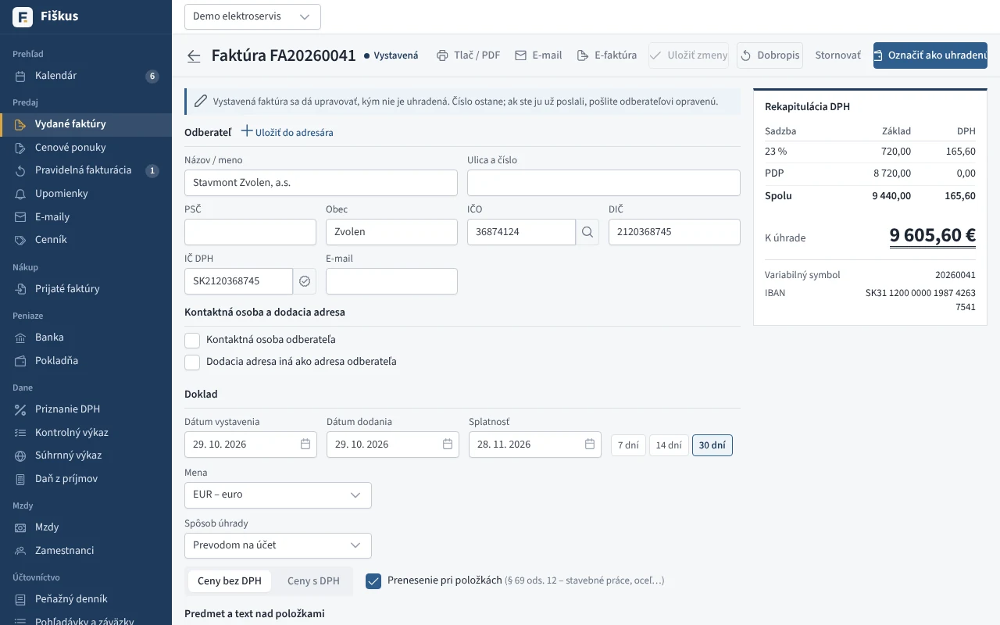

Faktúra za minútu, aj ako e-faktúra
Odberateľa doplníte podľa IČO, DPH a rekapituláciu spočíta program. Faktúra ide do PDF s QR kódom PAY by square alebo e-mailom. Od roku 2027 ju Fiškus pošle ako e-faktúru cez digitálneho poštára do siete Peppol a prijaté e-faktúry si sám vyzdvihne.
Skúste: Vystavte faktúru s prenesením daňovej povinnosti a pozrite sa, v ktorej časti kontrolného výkazu sa objaví.

